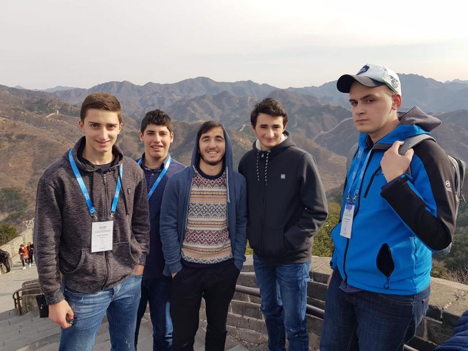
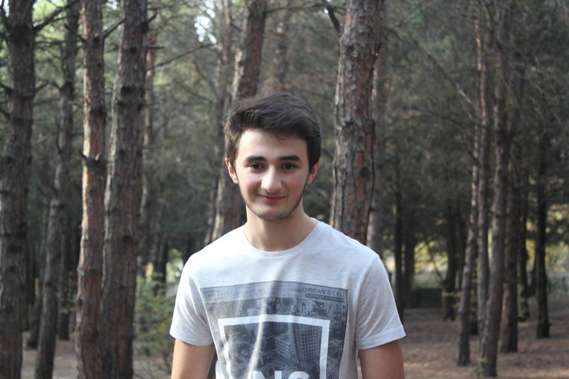
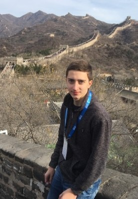

როგორც იცით სკოლაში ფუნქციონირებს ასტროფიზიკის წრე. სადაც სკოლის მოსწავლეების ბაზაზე ხდება ნორჩი ასტროფიზიკოსების წვრთნა. ისინი ემზადებიან საერთაშორისო ტურნირებზე გამოსასვლელად და ოლიმპიადებზე მონაწილეობის მისაღებად. ამავე წრის ბაზაზე მომზადებული მოსწავლეებით დაკომპლექტებული ჯგუფი გაემგზავრა ჩინეთში, რომლებიც წარმატებულები დაგვიბრუნდნენ. ესენი არიან ალექსანდრე მერაბიშვილი, აკაკი ჩხაიძე, დავით მდინარაძე და ნიკოლოზ ცქიტიშვილი. დღეს, მინდა გაგაცნოთ ასტროფიზიკის ჯგუფის წევრები, ორი წარჩინებული მოსწავლე აკაკი ჩხაიძე და სანდრო მერაბიშვილი, ისინი მრავალი ოლიმპიადის გამარჯვებულები არიან. მინდოდა განსხვავებული კუთხით დაგენახათ ორივე მათგანი, ამიტომ ვთხოვე ცოტაოდენი მოეთხროთ საკუთარ თავზე.
„ვარ ძალიან ცნობისმოყვარე და მიზანდასახული. თავისუფალ დროს პიანინოზე ვუკრავ, დიდ დროს ვუთმობ მუსიკის მოსმენას, ასევე მიყვარს ფილმების ყურებაც. ჩემი საყვარელი ფილმი არის The prestige. უამრავი ლამაზი ფერიდან ჩემი საყვარელი წითელია. მიზნად დავისახე შევქმნა რაიმე, თუნდაც უმნიშვნელო, რაც ოდნავ მაინც არგებს კაცობრიობას. ჩემი მოტივაცია ყოველთვის არის იმ საქმის სიყვარული, რასაც ვაკეთებ.ყველაზე მეტად ფიქრი მიყვარს.კარგი იქნება მქონდეს უფრო ძლიერი ნებისყოფა.მინდა ხალხს ვახსოვდე როგორც მზურნველი და სამართლიანი. ადამიანში ყველაზე მეტად უბრალოებასა და ნიჭს ვაფასებ, მაღიზიანებს უტიფრობა და სიყალბე.ჩემს თანატოლებს ვურჩევ მოსინჯონ საკუთარი თავი განსხვავებულ სფეროებში, იპოვონ საყვარელი საქმიანობა და არაფერი დაიშურონ წარმატების მოსაპოვებლად.“
რესპონდენტი - სანდრო მერაბიშვილი.
„ჩემი თავი მიმაჩნია მონდომებულ და მიზანდასახულ ადამიანად.თავისუფალ დროს ვვარჯიშობ, ძალიან მიყვარს ფეხბურთის თამაში, ფილმების ყურება დიდად არ მიზიდავს.ჩემთვის მისაბაძი და საყვარელი ფეხბურთელი რონალდინიოა.ძალიან მომწონს მწვანე ფერი. ჩემი ცხოვრების განმავლობაშუ მინდა წვლილი შევიტანო მეცნიერების განვითარებაში, რაც ჩემი მოტივაციაა.ვისურვებდი უფრო მეტად ვიყო კონცენტრირებული ჩემს საქმიანობაზე. კარგი იქნება თუ ჩემ ირგვლივ მყოფ ხალხს დავამახსოვრდები როგორც პატიოსანი და იუმორით აღსავსე ადამიანი.ყველაზე მეტად მაღიზიანებს ორპირობა, ვაფასებ იუმორის გრძნობას. ჩემს თანატოლებს ვურჩევდი მეტი დრო დაუთმონ თვითგანვითარებას.“
რესპონდენტი - აკაკი ჩხაიძე.
დეკემბერი, 2018
გამოცემა N1
ავტორი: ელენე პაიჭაძე